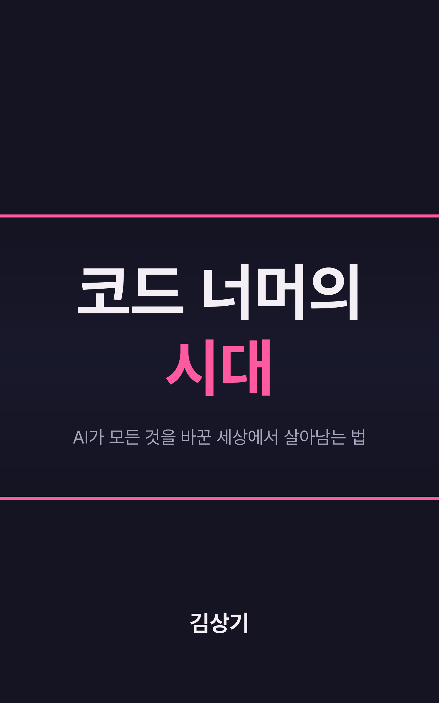

코드 너머의
시대
AI가 모든 것을 바꾼 세상에서 살아남는 법
"AI가 당신을 대체하지 않습니다. AI를 사용하는 사람이 대체합니다."
7장에서

비개발자가 주말 세 시간 만에 앱을 만들었다
"Claude한테 이렇게 저렇게 해달라고 말했더니 만들어줬어요. 주말에 세 시간 정도 걸렸나?"
1장, 마케팅팀 김 대리의 월요일 아침 메시지
코드 한 줄 짜본 적 없는 사람입니다. CSV를 올리면 감성 분석까지 해서 긍정/부정 비율을 알려 주는 앱이 진짜 돌아갑니다. 이 장면 앞에서 드는 감정은 아마 놀라움 반, 불안 반일 겁니다. 오늘 한 시간은 그 감정을 숫자와 사례로, 과장도 축소도 없이 나눠 보는 시간입니다.
변하는 것은 "어떻게", 변하지 않는 것은 "무엇을, 왜"
| 변하는 것 | 변하지 않는 것 | |
|---|---|---|
| 질문 | 어떻게 만드는가 | 무엇을, 왜 만드는가 |
| 예 | 코드를 직접 타이핑하는 방식, 언어 문법을 외우는 필요, 반복 작업에 쏟는 시간 | 문제를 발견하고, 왜 풀어야 하는지 설명하고, 해결책이 사람들에게 주는 가치를 판단하는 일 |
| 누가 | AI가 빠르게 가져가고 있다 | 시대가 바뀌어도 여전히 사람의 영역 |
| 그래서 | 실행력의 가치가 희석된다 | 판단·공감·관계의 희소성이 올라간다 |
9장 「변하는 것과 변하지 않는 것」. BCG의 정리대로 "AI는 대체(replace)하기보다 더 많은 일자리를 재편(reshape)할 것이다." 재편은 일이 없어지는 대신 모양이 바뀐다는 뜻이다.
네 부, 아홉 장: 진단에서 처방으로
개발자와 비개발자를 함께 독자로 삼았다. 장마다 개발자의 장면과 기획자·디자이너·마케터의 장면을 나란히 둔다. 전작을 읽지 않아도 이 책은 독립적으로 완결된다.
질문 자체가 바뀌었다
"코드만 잘 짜면 되는 거 아니야?"
→ "코드를 AI가 짜면, 그 다음은?"
1장, 전작 「코드 너머, 회사보다 오래 남을 개발자」(2025)의 출발점과 이 책의 출발점
전작의 답은 "코드 너머에 있는 소프트 스킬이 결정적 경쟁력"이었습니다. 경청, 질문, 회의 스킬, 협업, 리더십. 불과 1년여 만에 코드 자체를 AI가 상당 부분 쓰는 시대가 왔고, 그 메시지는 틀리지 않았습니다. 오히려 "있으면 좋은 것"에서 "생존의 조건"이 되었습니다.
지금 무슨 일이 벌어지고 있는가
바이브 코딩, 에이전틱 코딩, 개발의 민주화. 변화는 과장인가, 구조적 전환인가? 그리고 그 변화 속에서 내 자리는 안전한가?
- 1장. AI가 코드를 쓰는 시대
- 2장. 당신의 자리는 안전한가
많이 쓰지만, 맡길 수 있는 일은 아직 적다
"사용한다"와 "맡긴다"는 다르다. 60%를 쓰면서도 완전 위임은 20%도 안 된다는 것이 3장과 7장을 끌고 가는 숫자다.
말하면 만든다 → 목적지만 말하면 간다
| 바이브 코딩 | 에이전틱 코딩 | |
|---|---|---|
| 처음 나온 말 | Andrej Karpathy, 2025년 초: "코드가 작동하는지조차 기억하려고 하지 않는다" | AI가 스스로 계획·작성·테스트·디버깅·수정 |
| 주도권 | 사람: "이거 만들어줘", "저거 고쳐줘"를 한 줄씩 지시 | AI: 사람은 중간중간 확인하고 방향을 잡는 역할 |
| 비유 | 운전하면서 내비게이션 안내를 받는 것 | 목적지만 말하면 차가 알아서 가는 것(자율주행) |
| 잘 맞는 곳 | 팀 내부 도구, 빠른 프로토타입, 개념 검증(POC) | 대규모 코드베이스 작업, 멀티에이전트 분업 |
| 한계 | 대규모 서비스를 안정적으로 운영하는 일은 다른 차원 | 보안: AI가 몇 초 만에 수백 줄을 쏟아내면 취약점이 숨을 확률도 높다 |
1장. Anthropic 보고서의 8대 트렌드에는 개발 사이클이 주 단위에서 시간 단위로 압축된다는 것, 단일 에이전트에서 멀티에이전트 팀으로의 진화, 그리고 마지막 항목 "보안 우선 아키텍처의 필요성"이 들어 있다.
Rakuten: 1,250만 줄 라이브러리에서 7시간 자율 작업
1장·7장. 7장은 같은 사례를 다시 읽는다. "AI가 혼자 다 했다"고 읽으면 빠지는 것이 있다. 누군가가 그 작업의 범위를 정의하고, 목표를 설정하고, 결과를 검증했다.
노코드/로코드 시장은 투기보다 업무 도구로 커졌다
1장·5장. 원고는 여기의 "앱"이 모두 복잡한 엔터프라이즈 시스템은 아닐 것이라고 단서를 단다. 업무 자동화 도구, 내부 대시보드, 프로토타입 수준일 수 있다. 75%·80%는 전망 수치다.
둘 다 신뢰할 만한 기관의 데이터인데, 방향이 반대다
| 불안한 숫자 | 희망적인 숫자 |
|---|---|
| 22~25세 소프트웨어 개발자 고용, 2022년 대비 약 20% 감소(Stanford Digital Economy Study) | 2033년까지 소프트웨어 엔지니어 직종 17% 성장 전망. 미국 노동통계국(BLS), 전체 직종 평균의 거의 4배 |
| 상위 15개 테크 기업 신입 채용, 전년 대비 25% 감소 | CNN Business: "The Demise of Software Engineering Jobs Has Been Greatly Exaggerated" |
| 카카오, AI로 대체 가능한 직무에 신규 인원 배정 중단 | 개발자의 37%가 AI로 커리어 기회가 이미 확장됐다고 응답 |
| Stack Overflow 「AI vs Gen Z」: 주니어가 성장하던 사다리의 첫 몇 단이 사라진다 | AI/ML 엔지니어, MLOps, 에이전틱 AI 엔지니어 같은 새 직군의 급성장 |
2장 「불안을 직시하되, 과장된 공포는 걷어내기」의 정리. 37%는 원고에 조사 이름이 없다.
바뀌는 것은 일자리의 총량보다 성격이다
2장. 원고의 비유: 자동차가 등장하자 마부와 마차 제작자는 줄었지만 운전사·정비사·도로 설계사·자동차 보험 설계사가 생겨났고, 파이는 커졌다.
벽돌을 쌓는 일에서 건물을 설계하는 일로
2장. 루틴한 코딩에서 해방된 시간이 아키텍처 설계, 시스템 통합, AI 기반 의사결정으로 옮겨 가고 있다. 원고는 이 수치의 조사 이름을 밝히지 않았다. 발표에서도 "조사에 따르면" 이상으로 말하지 않는다.
"AI가 내 업무를 더 잘하면 나는 뭘 하지?"
2장. 형태는 달라도 두 불안이 묻는 질문은 같다. "이 변화 속에서 나의 고유한 가치는 무엇인가?" 이 질문에 답을 찾는 과정이 이 책의 여정이다.
"형, 저 이직 준비해야 할까요?"
"이직이 문제가 아니야. 어딜 가든 같은 변화가 오고 있으니까. 중요한 건 네가 지금 하고 있는 일 중에서 뭐가 남고 뭐가 사라질지를 아는 거야. 그걸 알면 어디에 있든 준비할 수 있어."
2장, 3년차 후배 개발자의 카톡에 대한 저자의 답
"당신의 자리는 안전한가?"의 답은 당신이 앉아 있는 자리보다 당신이 하고 있는 일의 성격에 달려 있습니다. 후배는 잠깐 침묵하더니 물었습니다. "그러면 뭐가 사라지는 건데요?" 그 질문이 PART 2입니다.
무엇이 남고, 무엇이 사라지는가
AI가 가져간 것과 가져갈 수 없는 것을 냉정하게 구분한다. 그리고 모두가 만드는 세상에서 "진짜 개발자"는 누구인가?
- 3장. AI가 가져간 것들
- 4장. AI가 가져갈 수 없는 것들
- 5장. 모두가 개발자가 되는 세상
패턴이 명확하고, 반복적이며, 기존 데이터에서 배울 수 있는 일
3장. 세 가지 모두 "이전에 누군가가 수천 번, 수만 번 해본 적 있는 일"이다. 시스템 전체의 상호작용에서 생기는 복잡한 버그는 여전히 사람의 영역이다. 원고는 이 수치의 조사 이름을 밝히지 않았다. 발표에서도 "조사에 따르면" 이상으로 말하지 않는다.
AI가 가져간 것은 "실행", 빈자리에 들어오는 것은 "판단"
| 사라지고 있는 것 | 사라지지 않는 것 |
|---|---|
| 코드를 타이핑하는 행위 그 자체 | 무엇을 만들어야 하는지 결정하는 판단 |
| 이미 알려진 패턴을 반복 적용하는 작업 | 여러 시스템 사이의 맥락을 이해하는 능력 |
| 명확한 정답이 있는 기계적 작업 | "거의 맞지만 완전하지 않은" 것을 완전하게 만드는 감각 |
| 이전 코드를 복사해서 약간 수정하는 일 | 비즈니스 요구사항을 기술적 설계로 번역하는 능력 |
3장. 빈자리에 들어오는 세 가지는 아키텍처 설계, 시스템 통합, AI 기반 의사결정이다. 개발자의 핵심 역량이 "작성자"에서 "설계자이자 평가자"로 이동한다. 비개발자도 "실행자"에서 "판단자"로.
66%: "거의 맞지만 완전하지 않은(almost right but not quite)"
AI가 80점짜리를 만들어 주면, 사람은 그걸 100점으로 끌어올린다.
이 20점의 차이가 프로덕션 환경에서는 결정적이다.
3장. 개발자의 66%가 AI의 가장 큰 불만으로 꼽은 것. MIT Technology Review: "AI Coding Is Now Everywhere. But Not Everyone Is Convinced"
완전히 틀리면 버리고 다시 하면 됩니다. 90%가 맞고 10%가 틀리면, 그 10%를 찾아내는 일이 더 어렵고 더 많은 전문성을 요구합니다(7장). 현재의 AI 코딩 도구는 완전 자율주행(Level 5)이 아니라 운전 보조(Level 2~3) 수준입니다. 후임자보다 조수에 가깝습니다.
이미 여러분 안에 있지만, 과소평가해 온 것들
4장. AI가 "어떻게"를 해결하는 시대에, "왜"와 "무엇을"에 답하는 인간 역량의 가치는 오히려 올라간다.
같은 요청, 다른 질문
요청: "로그인 화면의 반응 속도를 개선해 주세요."
"잠깐, 사용자들이 정말 로그인 속도 때문에 떠나는 건가요? 혹시 로그인 자체를 너무 자주 요구하는 게 문제는 아닐까요?"
4장, 경험 많은 엔지니어의 질문(원고의 예시 상황)
AI는 요청을 받으면 즉시 캐싱·쿼리 개선·렌더링 제거에 들어갑니다. 그런데 AI가 문제를 빠르게 풀어 줄수록 잘못된 문제를 풀 때의 낭비도 기하급수적으로 커집니다. 방향이 틀렸다는 걸 깨닫기도 전에 거대한 산출물이 만들어져 있을 수 있으니까요.
Microsoft의 5C: 다섯 가지 모두 인간적 역량
| C | 뜻 | AI 시대에 더 중요한 이유 |
|---|---|---|
| 호기심 Curiosity | 끊임없이 "왜?"라고 묻는 태도 | 답이 쉽게 나오는 세상에서는 좋은 질문을 던지는 사람의 가치가 올라간다 |
| 비판적 사고 Critical Thinking | AI의 출력을 검증하고 판단 | "거의 맞지만 완전하지 않은" 답의 빈틈을 잡아낸다 |
| 창의성 Creativity | 기존에 없던 연결고리 | 패턴을 재조합하는 AI와 달리, 패턴 자체를 새로 만든다 |
| 소통 Communication | 비기술 이해관계자에게 설명, 합의 | "AI의 제안과 우리의 판단이 다른데 어떻게 할까요?" 같은 새 소통 과제 |
| 인격 Character | 정직함, 책임감, 윤리 의식 | 기술이 사회에 미치는 영향이 커질수록 다루는 사람의 인격이 중요해진다 |
4장. WEF는 수요가 높은 역량 상위에 분석적 사고(1위)·창의성·회복탄력성·소통·공감을 두었고, McKinsey는 "Human skills will matter more than ever in the age of AI"라고 썼다. McKinsey 연구는 AI 문해력과 강한 인간 역량을 함께 갖춘 사람이 둘 중 하나만 가진 사람보다 현저히 높은 성과와 보상을 보인다고 했다.
2026년 한국 직업 트렌드 7대 핵심 역량: 다섯 가지가 인간적 역량
- 기술 역량 2: AI 리터러시, 데이터 해석력
- 인간적 역량 5: 창의적 문제 해결, 디지털 커뮤니케이션, 자기 주도 학습력, 윤리적 판단력, 협업과 적응력
- 삼성전자 SWITCH 사무국: 기술적 전문성을 넘어선 소프트 스킬을 강조
- 국내 채용 시장: "얼마나 많이 뽑느냐"에서 "누구를 뽑느냐"로. 기술 면접 외에 행동 면접, 문화 면접의 비중이 높아진다
2장·4장. 출처는 커리어온뉴스가 정리한 「2026년 한국 직업 트렌드 7대 핵심 역량」. 이 목록에 특정 도구의 사용법은 하나도 없다(8장).
"아무나 만든다"보다 "더 많은 사람이 더 안전하게 만든다"
시민 개발자의 가치는 기술적 역량보다 문제에 대한 깊은 이해에서 나온다.
5장. 코딩 전문 지식 없이 비즈니스 문제를 직접 해결하는 사람(Citizen Developer)
영업팀 A 과장의 주간 매출 보고서, HR B 매니저의 지원서 분류, C 팀장의 복사-붙여넣기 답변. 예전에는 기획서 → 개발팀 → 우선순위 대기열을 거치며 "전화 게임"처럼 원래 문제가 변형됐습니다. 문제를 겪는 사람이 직접 만들면 그 왜곡이 사라집니다. 다만 가드레일·거버넌스·보안 정책·데이터 접근 규칙·배포 절차라는 안전장치가 없으면 민주화는 그냥 혼란이 됩니다.
코드를 직접 짜는 능력보다 사람과 시스템을 연결하는 능력
5장. Stack Overflow 블로그의 표현을 빌리면 "AI vs Gen Z"보다 "AI with Everyone"이 올바른 프레임이다. 그 프레임에서는 "어떤 가치를 만들어내는가"가 사람을 정의한다.
시민 개발자가 만든 앱이 100개, 1,000개, 10,000개가 되면
- 마케팅팀과 영업팀이 각자 만든 고객 데이터 앱이 서로 다른 정보를 갖는다. 어느 쪽이 맞는지 아무도 모른다
- 누군가 만든 자동화 흐름이 외부 API를 호출하는데 인증 키가 하드코딩되어 있다
- 퇴사한 직원이 만든 업무용 앱이 아직 돌아가는데, 아무도 코드를 이해하지 못한다
- 그래서 전문 개발자와 IT 조직의 역할은 한 단계 올라간다: 아키텍처 설계, 거버넌스 수립, 보안 관리
5장(예시 상황)과 1장. AI가 생성한 코드에서 흔한 문제: SQL 인젝션에 취약한 쿼리, 하드코딩된 비밀 키, 불충분한 입력 검증, 안전하지 않은 라이브러리 의존성. Anthropic 보고서도 8대 트렌드 하나로 "보안 우선 아키텍처의 필요"를 꼽았다.
다음 시대의 경쟁력
만드는 일이 쉬워지면 무엇이 어려워지는가? 문제 발견, 오케스트레이션, 그리고 오래 가는 학습법.
- 6장. 무엇을 만들 것인가
- 7장. AI와 함께 일하는 법
- 8장. 오래 가는 사람의 학습법
"만들 수 있느냐"에서 "무엇을 만들어야 하는가"로
과거의 소프트웨어 개발이 "화살 한 발을 신중하게 쏘는 것"이었다면,
AI 시대의 개발은 "기관총을 쏘는 것"에 가깝다.
이제 중요한 건 어디를 겨냥하느냐다.
6장. SDLC의 사이클 타임이 주 단위에서 시간 단위로 압축된다는 Anthropic 보고서를 받아
실패의 비용이 극적으로 낮아졌습니다. 하지만 "무엇을 실험할 것인가"를 결정하는 능력이 없으면 빠른 속도는 빠른 낭비가 되기 쉽습니다. 할 수 있는 것이 열 가지일 때와 만 가지일 때, 고르는 능력의 값은 전혀 다릅니다.
"채팅봇 응답 속도를 개선해 달라"는 요청이 들어왔다
| 문제 해결자 | 문제 발견자 | |
|---|---|---|
| 첫 반응 | 곧바로 서버 최적화, 모델 경량화, 캐싱 | "고객들이 정말 불만인 게 응답 속도인가요?" |
| 한 일 | 응답 시간 2초 → 0.5초 | 고객 지원 로그를 뒤져 봄. 고객의 70%가 첫 응답 뒤 곧바로 "상담원 연결"을 요청 |
| 결과 | 기술적으로는 성공, 비즈니스적으로는 실패 | 문제는 속도보다 품질, 같은 노력으로 훨씬 큰 가치 |
6장의 예시 상황(원고가 "해볼까요"로 든 가정 사례이며 수치도 예시 값이다). 전작에서 소통 역량으로 다룬 "경청"과 "질문법"이 AI 시대에는 문제 발견력이라는 메타 역량으로 격상된다.
거창한 교육보다 관점을 바꾸는 데서 시작한다
- 현장에 가까이: 데이터는 과거를, 현장은 미래를 보여 준다. 개발자라면 고객 지원 로그를 가끔 들여다본다
- 다른 분야에 호기심: 행동경제학 책에서 결제 흐름의 아이디어가 나온다. 5C의 첫째가 호기심인 것은 우연이 아니다
- "왜?"를 다섯 번: 다운로드 감소 → 광고 효율 → 설치 전환 → 리뷰 점수 → 특정 기기 크래시. 마케팅 문제가 기술 문제로 드러났다
- 불편함에 주목: "원래 그런 거지" 대신 "왜 원래 이래야 하지?"를 한 번 더
- 해결책부터 생각하지 않기: "이 기술로 뭘 만들지?" 대신 "이 사람들이 겪는 문제가 뭘까?"에서 시작
6장. 조직 차원에서는 "틀린 질문"에 대한 관용, 즉 전작에서 강조한 심리적 안전감이 핵심 조건이다.
좋은 질문 기술을 넘어, AI라는 존재 자체를 이해하는 능력
7장. 2026 한국 직업 트렌드가 AI 리터러시를 7대 핵심 역량의 첫째로 꼽은 이유다. "AI와 경쟁하기보다 지휘하고, 맡기되 검증하고, 두려워하지도 맹신하지도 않는 것."
개발자와 비개발자, 시작점은 다르고 원칙은 같다
| 개발자를 위한 AI 협업법 | 비개발자를 위한 AI 협업법 |
|---|---|
| "무엇을"보다 "왜"를 먼저: "B2B SaaS이고, 금융 고객이 주로 쓰고, SSO와 MFA가 필요해" | 결과물의 "형태"보다 "기준"을 먼저: 누가 읽고, 어떤 결정을 위한 자료인지 |
| 단계적으로 나눠 맡긴다: 설계 → 토론 → 구현 → 리뷰 | AI는 초안 생성기, 마무리는 직접: "빈 종이의 공포"가 사라진다 |
| 신뢰하지 말고 검증: AI가 쓴 테스트도 해피 패스만 보는지 확인 | "AI가 틀릴 수 있다"는 전제: 숫자가 있으면 원본 출처를 확인 |
| 페어 프로그래밍 파트너: AI는 토론 상대, 의사결정자는 나 | 반복 업무부터: 주간 보고서, 회의록 요약, 반복 이메일 |
| "확실하지 않은 부분은 확실하지 않다고 말해줘" 한 줄 추가 | 역할을 부여: "너는 경험 많은 사업개발 디렉터야. 이 기획안의 사업성을 냉정하게 평가해줘" |
| 실패를 학습 데이터로: "내가 어떤 맥락을 빠뜨렸을까?" | 같은 자료를 마케팅·재무·고객 관점으로 여러 번 검토 받기 |
7장. 흔한 실수 세 가지: 과도한 기대(완전 위임 가능한 작업은 20%도 안 된다), 검증 없는 수용, 모든 것에 AI를 쓰려는 것. AI는 "완벽한 동료"보다 "유능하지만 감독이 필요한 주니어"에 가깝다.
코드 한 줄씩 보기보다, 방향과 품질 기준을 세운다
- 맥락과 제약을 명확히: "이런 비즈니스 맥락에서, 이런 사용자를 위해, 이런 제약 하에서"
- 평가 기준을 미리: "코딩 컨벤션을 따르고, 에러 핸들링을 포함하며, 단위 테스트를 함께 작성해줘"
- 단계적으로 검증: 설계를 먼저 보고, 괜찮으면 구현, 그 결과를 리뷰하고 피드백
- 틀릴 수 있다는 전제: 불신해서가 아니다. 좋은 동료끼리도 서로 리뷰한다
- 보안 우선: AI 에이전트의 권한 범위, 민감 데이터 노출까지 오케스트레이터의 책임. "빠르게"보다 "안전하게 빠르게"
7장. Anthropic이 말하는 "지능적 협업을 통한 인간 감독 확장". 며칠 단위로 일하는 장기 실행 에이전트가 오면 핵심 체크포인트를 정하고 주기적으로 확인하는 능력이 필요해진다.
기술은 옷이고, 역량은 체력이다
| 기술(Skill) | 역량(Capability) | |
|---|---|---|
| 예 | React, Python 데이터 분석, Figma, 엑셀 재무 모델 | 문제를 구조화하는 능력, 새 기술을 빠르게 배우는 능력, 맥락과 기술을 잇는 능력, 소통 |
| 성질 | 명확하고, 측정 가능하고, 빨리 배우고, 빨리 진부해진다 | 측정하기 어렵고, 쌓는 데 오래 걸리지만, 한번 쌓이면 쉽게 사라지지 않는다 |
| AI와의 관계 | AI가 가장 빠르게 대체하는 영역 | "이 상황에서 어떤 기술을 고를지", "왜 이 방식이 나은지"는 AI가 대신하기 어렵다 |
| 배우는 법 | "React를 다룰 수 있는 사람" | "UI 컴포넌트 설계 원칙을 이해하고 그것이 React에서 어떻게 구현되는지 아는 사람"(React가 사라져도 남는다) |
8장. 또 하나의 비유: 기술이 "특정 악기를 연주하는 능력"이라면 역량은 "음악적 감각" 자체다.
깊이 있는 전문성이 두 개, 그 교차점은 데이터셋 어디에도 없다
8장. 두 번째 세로 획을 찾는 힌트: 가장 자주 협업하는 분야, 업무 밖에서도 끌리는 분야, 시장 수요가 높은 교차 영역(AI 리터러시 + 도메인 전문성). 앤드류 응: "AI 시대에는 무엇을 아는가보다 얼마나 빨리 배우는가가 중요하다."
무리하지 않으면서 꾸준히: 학습을 일상에 통합하는 시스템
무엇을 배울지 정하는 나침반 세 질문: 3년 후에도 유효할까? · AI가 대신하기 어려운 영역인가? · 나의 고유한 조합을 강화하는가?
| 주기 | 시간 | 하는 일 |
|---|---|---|
| 매일 | 30분 | 주 전문 분야의 최신 동향: 뉴스레터, 기술 블로그, 커뮤니티. 출퇴근 시간을 쓴다 |
| 매주 | 3시간 | 새 기술이나 도구를 직접 써 본다: 튜토리얼, 사이드 프로젝트, AI로 프로토타입 |
| 매달 | 3일 | 깊이 있는 학습: 강의 하나, 책, 콘퍼런스·밋업. 배운 것을 자기 방식으로 정리한다 |
8장. 저자가 이름 붙인 프레임워크이고 출발점이다. 한 달에 한 번 10시간 몰아서보다 매일 30분이 훨씬 효과적이다. AI를 튜터로 쓸 때도 먼저 15~30분은 혼자 고민한 뒤 풀이를 보여 주고 피드백을 받는다.
코드 너머의 세계로
"회사보다 오래 남을 개발자"에서 "시대보다 오래 남을 사람"으로. 코드 너머에서 우리가 만나는 것은 무엇인가?
- 9장. 코드 너머에서 만나는 것들
기술 패러다임이 뒤집혀도 남는 사람의 네 조건
9장. 전작의 추천사: "AI가 코딩을 대신할 순 있어도 '함께 일하고 싶은 사람'은 결국 협업을 잘하는 사람이다." 그때는 예측처럼 들렸고, 지금은 현재에 대한 진단이다.
기술은 코드 "안"에 있다. 그 바깥에 있는 여섯 가지
9장. "AI가 아무리 똑똑해져도, 당신의 이야기를 대신 살아줄 수는 없습니다."
세 문장
코드가 사라진 자리에, 사람이 남습니다.
기술이 바뀐 자리에, 역량이 남습니다.
시대가 지나간 자리에, 이야기가 남습니다.
9장, 이 책의 마지막 문장들
변하는 것은 "어떻게 만드는가", 변하지 않는 것은 "무엇을, 왜 만드는가". 두려움과 기회를 가르는 것은 능력보다 관점이고, 그 관점은 "이해"에서 갈립니다. 이 책은 정확한 지도라기보다 북쪽이 어느 방향인지 보여 주는 작은 나침반이 되려고 했습니다.
내일, 딱 한 가지만
- 개발자라면: 반복적으로 하던 작업 하나를 AI에게 맡기고, 결과를 꼼꼼히 검토해 잘한 부분과 놓친 부분을 구분한다
- 비개발자라면: 업무 질문을 하나 던진다. "이 기획서의 약점은 뭘까?" 그 답을 평가하는 과정이 연습이다
- 아직 AI 도구를 안 써 봤다면: 오늘 궁금했던 것 하나를 물어보고, 대답이 마음에 드는지 판단한다
- 누구든: 이번 주에 배운 한 가지를 동료·후배·온라인 커뮤니티에 나눈다
9장 「내일 할 수 있는 한 가지」. 오늘 하나 배우고, 내일 하나 시도하고, 모레 한 사람과 나누면 된다. 전작과 이번 책에서 변하지 않은 결론은 "결국은 사람"이다.
코드 너머의
시대
당신의 이야기는 이제부터입니다.
「코드 너머의 시대」 v1.0.4(2026-11-07) · 「코드 너머, 회사보다 오래 남을 개발자」(2025) 후속작
CC BY-NC-SA 4.0 · ksangki.github.io/beyond-code-era